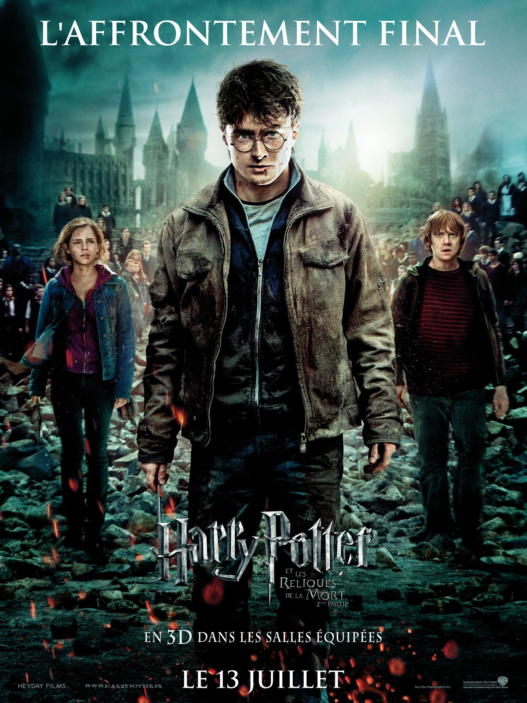
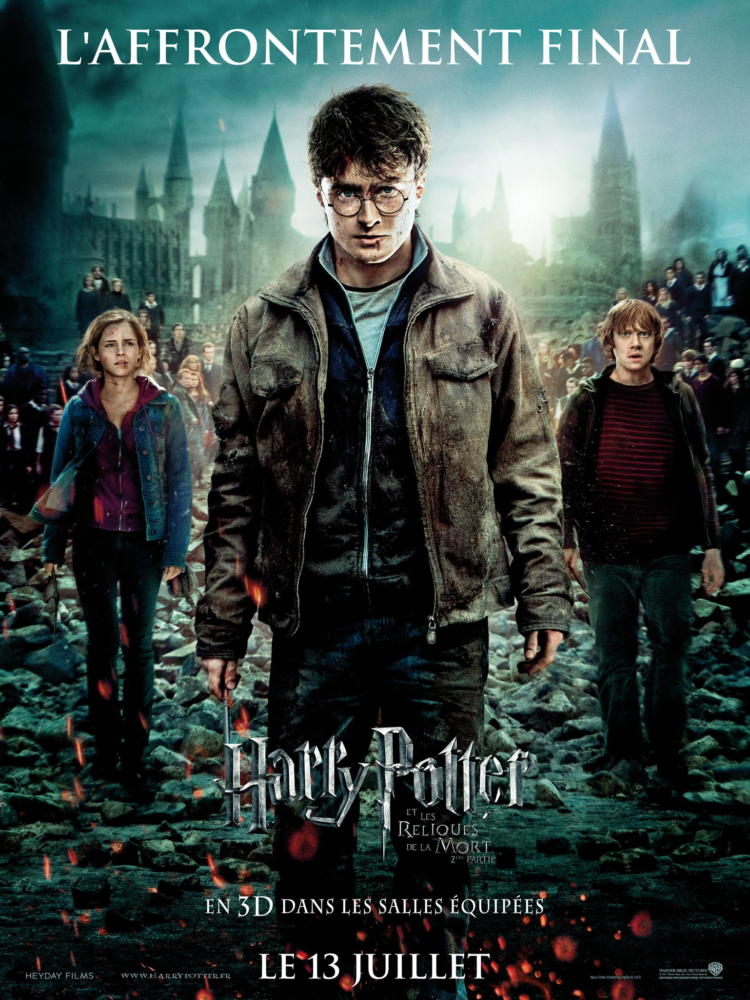

Incarnation du malheur et du désespoir
Un Détraqueur est une créature des ténèbres considérée comme la plus abjecte qui soit au monde. Les Détraqueurs se nourrissent de la joie humaine, et provoquent par la même occasion du désespoir et de la tristesse sur quiconque se trouve à proximité. Ils sont aussi capables d'aspirer l'âme d'une personne, laissant leur victime dans un état végétatif irréversible.
À l’instar des épouvantards et des esprits frappeurs, les Détraqueurs font partie de la catégorie des non-êtres, c’est-à-dire des créatures qui n’ont jamais été vivantes, au sens propre du terme, et qui ne tirent leur existence qu’à travers les émotions humaines dont ils se nourrissent.
Les Détraqueurs sont certainement les personnages des ténèbres les plus remarquables des livres Harry Potter. Alors que la majorité des créatures de la saga sont issues des récits folkloriques du monde entier, comme le Basilic, les centaures, les loups-garous, les kappas ou les licornes, les Détraqueurs sont une invention originale de J. K. Rowling.


 
